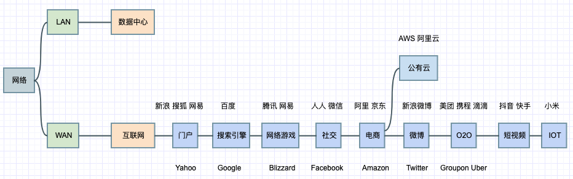
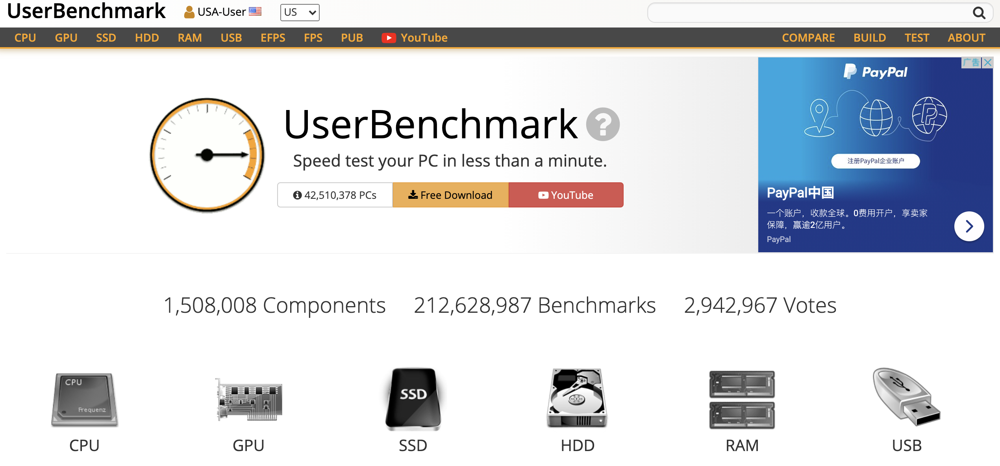
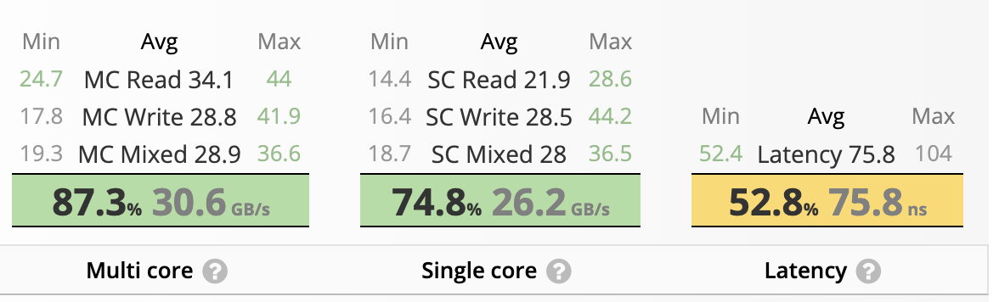
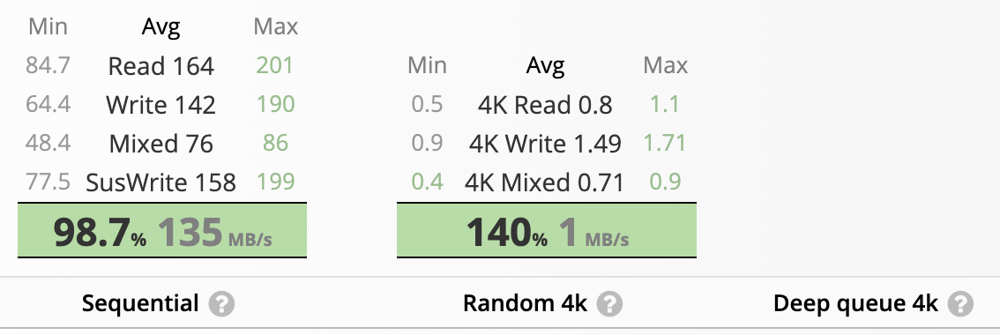
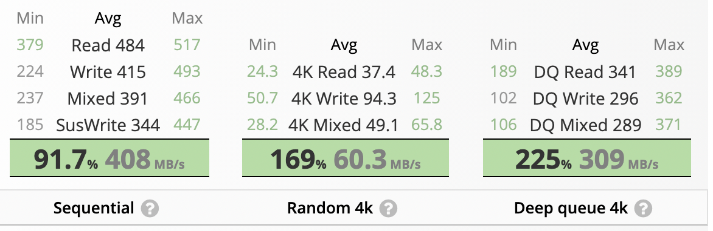
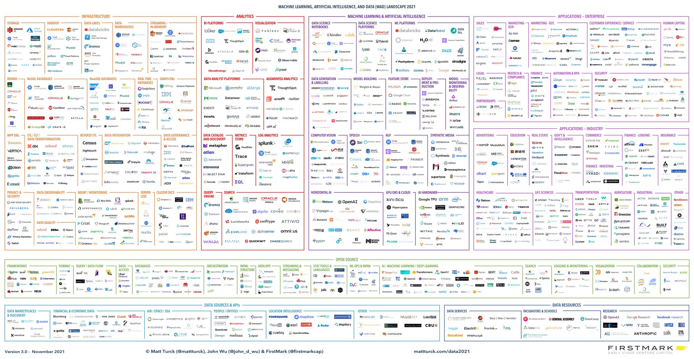

Notes on Big Data
1. Fifty Years of Technology
| Direction | Company/Organization | Period | Representative Technologies |
|---|---|---|---|
| Mainframes | IBM | 1970s | System z、AIX |
| Minicomputers | DEC、SUN | 1980s | SPARC、Solaris |
| Commodity PCs + fiber optics | 1990s | Intel、Seagate | |
| Big data | 2003-2004 | GFS、MapReduce、BigTable | |
| Open source | Apache | 2006-2007 | Hadoop、HBase |
| Artificial intelligence and deep learning | 2016 | TensorFlow |
"When the network becomes as fast as the processor, computers connected to the network will become empty."
--Eric Schmidt, Sun CTO, 1993
"The internet is about to disappear, and the Internet of Things will become pervasive."
--Eric Schmidt, Google CEO, 2015
Driving Forces
Network -> Internet -> Data Explosion -> Big Data -> Artificial Intelligence

2. Back to Hardware
| Hardware | Details |
|---|---|
| CPU | SIMD instructions (Single Instruction, Multiple Data) for vectorized queries |
| GPU | Matrix-computation acceleration for algorithms |
| Memory | DDR、JVM-GC |
| Disk | Interfaces: IDE/ATA, SATA, PCIe, SCSI, SAS, FC; categories: HDD and SSD; HDD characteristics: 5,600 RPM, 7,200 RPM, perpendicular recording, shingled recording; access patterns: sequential and random reads/writes; RAID. |
| Network card | Gigabit NICs, 10GbE NICs, switches, and network jitter. |
Performance Orders of Magnitude
| Target | Characteristics | Sequential Read/Write | Random Read/Write |
|---|---|---|---|
| Memory | Small capacity, very expensive, extremely fast reads/writes, no persistence | 10GB/S | 10GB/S |
| HDD | Large capacity, long lifespan, inexpensive, slow reads/writes, especially random access | 100MB/S | 1MB/S |
| SSD | Medium capacity, shorter lifespan, usually expensive, fast reads/writes | 100MB/s | 10MB/s |
Performance Examples
https://www.userbenchmark.com/ 
Memory

HDD

SSD

Rules of Thumb
| Target 1 | Target 2 | Comparison |
|---|---|---|
| GPU matrix operations | CPU matrix operations | More than 10x |
| Memory reads/writes | Disk sequential reads/writes | 100x |
| Memory reads/writes | SSD random reads/writes | 1000x |
| Memory reads/writes | HDD random reads/writes | 10000x |
| SSD sequential reads/writes | SSD random reads/writes | 10x |
| HDD sequential reads/writes | HDD random reads/writes | 100x |
| SSD sequential reads/writes | HDD sequential reads/writes | Within 10x |
| SSD random reads/writes | HDD random reads/writes | 10x |
- HDD random I/O bottlenecks: actuator positioning and seek time
- How HDDs fight back: RAID, scale-out capacity, and sequential I/O
Once these order-of-magnitude differences are clear, it becomes easier to understand why systems for massive real-time writes, such as HBase and Kafka, are designed the way they are.
3. Evolution

2016: Is Big Data Still a Thing? (The 2016 Big Data Landscape)
https://mattturck.com/big-data-landscape/
2017: Firing on All Cylinders: The 2017 Big Data Landscape
https://mattturck.com/bigdata2017/
2018: Great Power, Great Responsibility: The 2018 Big Data & AI Landscape
https://mattturck.com/bigdata2018/
2019: A Turbulent Year: The 2019 Data & AI Landscape
https://mattturck.com/data2019/
2020: Resilience and Vibrancy: The 2020 Data & AI Landscape
https://mattturck.com/data2020/
2021: Red Hot: The 2021 Machine Learning, AI and Data (MAD) Landscape
https://mattturck.com/data2021/